week 2 : ASSIGNMENT
- work through a git tutorial
- build a personal site in the class archive describing you and your final project
In week 2 we learn about version-controlled system (VCS) and git. we also get to know about basics of Web development. We are told to edit our default markdown page on GitLab and start learning about
Html-CSS so
we can start making our own web-site.
This week I am going to document the version-controlled system(VCS), git, web development, GitLab, markdown, and HTML/CSS.
Version-controlled system (VCS)
VCS is a kind of tool that can help to track our changes in our Source code, documents, and in our project files. It helps the team working on the specific project to track every modification in the
files.
If a group of people working on the same file, version control helps them to track changes performed by each individual. It is a very effective tool when a number of people are working on the same file or bunch of files which is
the source code of any app or any website. Because if any of them made some unwanted changes it will affect the whole project!
What is Git ?
Git is one version-controlled system that merges the work of different developers in a well-controlled way. It tracks and remarks every change made by developers.
click to learn more about Git and VCS more.
Git Merging and branching
When you are working with a team or in collaboration there will be chances that unwanted changes occur. To avoid these changes or to resolve this conflicts there are some ways/commands we can use.
- New branches : Git merge and Git checkout
- Git checkout
- git rebase
New branches
When you are working on projects, you want to make sure your last work which is absolutely fine and no need for changes in the short term basis, should be safe from any possible unwanted changes, We can do it by making a new
branch.
Below content is from Git Book.
Commits
This is Tree visualization of Number of commits, in this picture Commits C0, C1, C2. Here you can see the master branch is on the latest commit C3. It means you are
working on your latest version of the directory.
Here master is Default branch.

Making new Branch
As I mention above if you don't want to create any changes in the master branch (which is stable version) for now you can create a new Branch that will handle new versions of working directories for a
temporary basis and then you can merge it into your master branch. here
new branch "iss53" is a new branch and initially, it will be on the same commit with the master branch.
For making new branch in git And get directly checkout on that use this command :
git checkout -b iss53 // iss3 is only name of branch here.
git branch iss53 // in this command you will create new branch but your current branch will be master.
git checkout iss53 // This command will help you to checkout on new branch name iss53.
// so you can see here first command is eliminating two steps.

Making new commit
By making new commit you can see New branch will be ahead of one commit from master branch. Here arrows will always will be in direction of previous commits, it shows different versions of same file, you can also checkout previous version if needed , i will cover that letter.
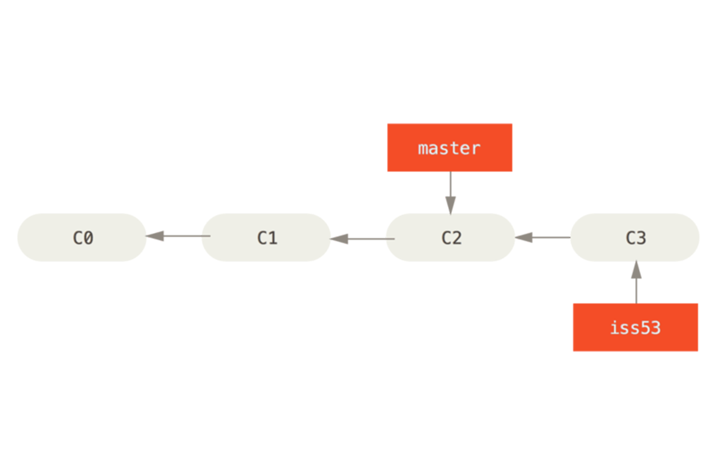Multiple branches
You can make multiple branches in git it may help you to store the different changes of different sections, from my knowledge if you are working on some web development, then you may want to do your header work
on different branch and your footer work on different branch to have good working medium without any commits confusion.
here Hotfix is new branch(Second one.) . Here current branch is master(Know from the arrows).
git branch Hotfix
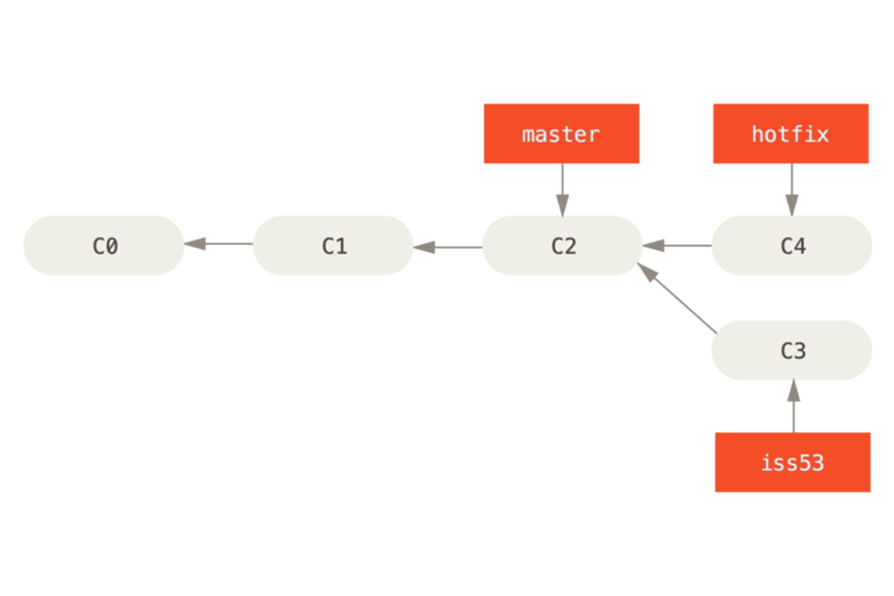
Merging branch
After doing necessarychanges on the new branches , you may want to include all the changes on master branch it can be done by merging.
merging will include all the new commits to master branch.
You can do it by two steps :
First checkout to master brach if you are in different branch
Second use git merge command ( you can use directly git merge command if you are in master branch)
git checkout master // if you are on new branch
git merge hotfix // to merge with hotfix
// You can delet the branch if it no longer needed use
git branch -d hotix
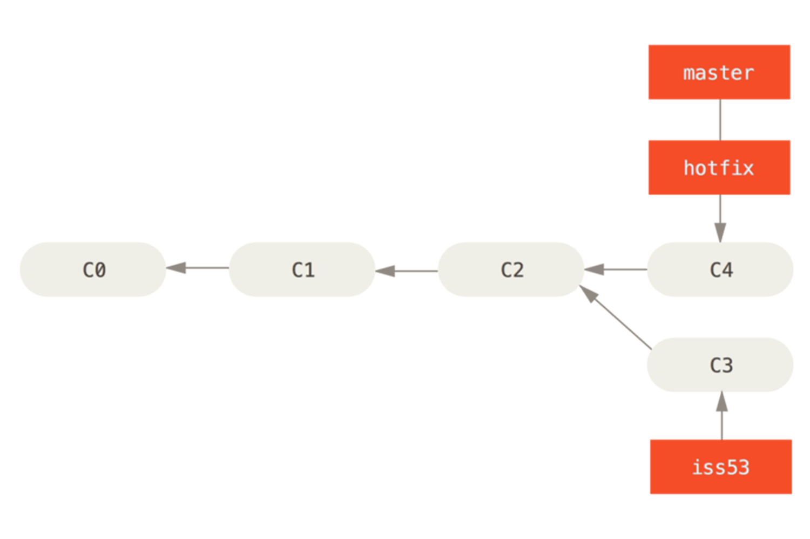
Meanwhile you can do chages on iss53, (It only shows flexibility of VCS)
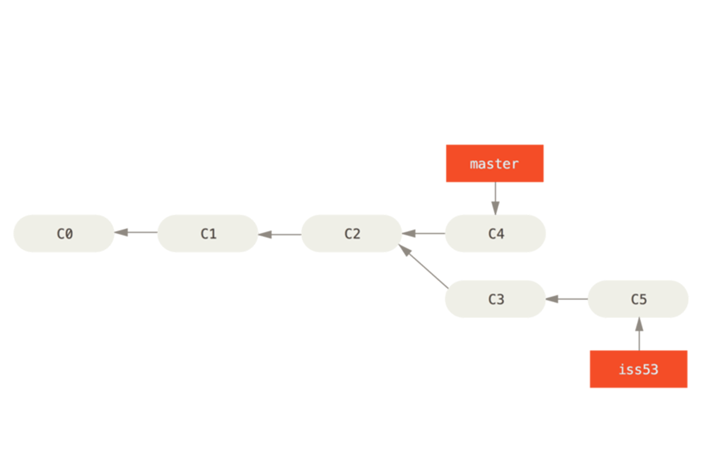Merge in and Merge into

Merging the iss53 branch too.
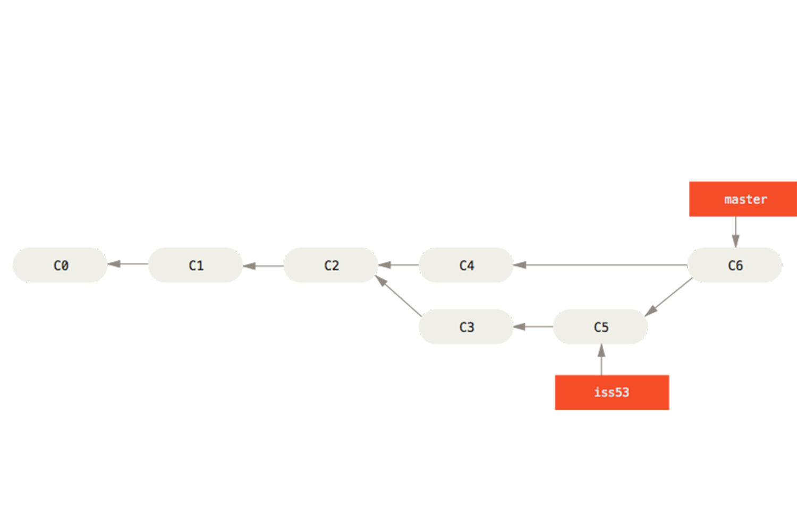there are many things to learn in git but it need some visual explanation also so i am linking one real time tutorial for git branching it will help to understad the concept of branching. Best practice is to make test git repo and do all
experiment on that
Click here to know more about git branching !
Git lab
GitLab is an open-source code repository and collaborative development platform. GitLab offers a location for online code storage and collaborative development of massive software projects. The repository includes version control to
enable hosting different development chains and versions, allowing users to inspect previous code and roll back to it in the event of unforeseen problems.
To get in git-lab Follow this step:
- You should get one mail about git registration confirmation.
- Open link, one confirmation message will show up.
- For password you have to click forget password and type your password.
- And then Just login in with new password!
Cloning the repository
In git-lab you may get one default template. To make your local repository you have to clone it to folder where you want to make your local repository.
1) Make one folder named fablab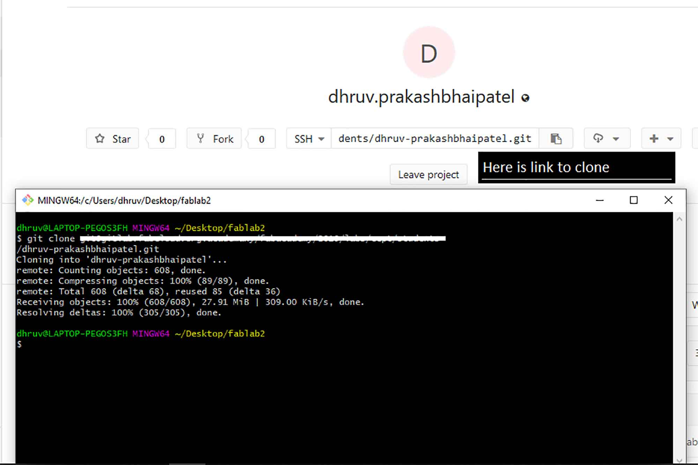
2) Open git-bash in it
3) And then type ** “git clone ‘link’.
After getting in Git-lab you have to get link your local repository with a new git lab account. (SSH KEY generation)
SSH key
SSH (Secure Socket Shell) is a network protocol that provides administrators with a secure way to access a remote computer. This step is to link your computer to the server.
When working with a Git-lab repository, you'll often need to identify yourself to Git-lab using your username and password. An SSH key is an alternate way to identify yourself that doesn't require you to enter your username and
password
every time.
SSH keys come in pairs, a public key that gets shared with services like Git-lab, and a private key that is stored only on your computer. If the keys match, you're granted access.
The cryptography behind SSH keys ensures that no one can reverse engineer your private key from the public one. click here for Details.
Generate ssh key
Generate SSH key by opening Git Bash and type/paste :)
ssh-keygen -t rsa -C your.email@example.com then enter.
** Enter File in which to save the key (directory) : Press Enter.

Copy SSH Key
** if overwrite option comes Enter : y
then Type : cat ~/.ssh/id_rsa.pub
copy key given below ** The key fingerprint is :

Git lab settings : SSH Key
Now Paste the link inside the box of Key and click Add key.

SSH is set !
Now you are linked with the remote repository of git lab with Secure shell !

Three trees of GIT
Three trees of GIT: head, index, working directory.
Three trees of GIT is something Necessary to learn a thing when you are using GIT LAB or github. You should be familiar with the head, index, working directory.
These are the list of important commands you should use to use GitLab. There are many commands but these will be used when you make changes to your local repository.
git clone /path/to/repository - Check out a repository (Create a working copy of a local repository) git config --global user.name "Sam Smith"
git config --global user.email sam@example.com - For telling Git who you are Git init - Initialize git git status - Status (to List the files you've changed and those you still need to add or commit) git add . - Add files (Add one or more files to staging (index) git commit -m "Commit message" - Commit (Commit changes to head (but not yet to the remote repository) git push origin master - Push (Send changes to the master branch of your remote repository)
Git init
.git may visibal here or may not. but using ' git init ' . git init will help us to add local repository

Adding File
Adding new file to local repository. if you know about Three trees of git, then you will know this file added to your working directory.
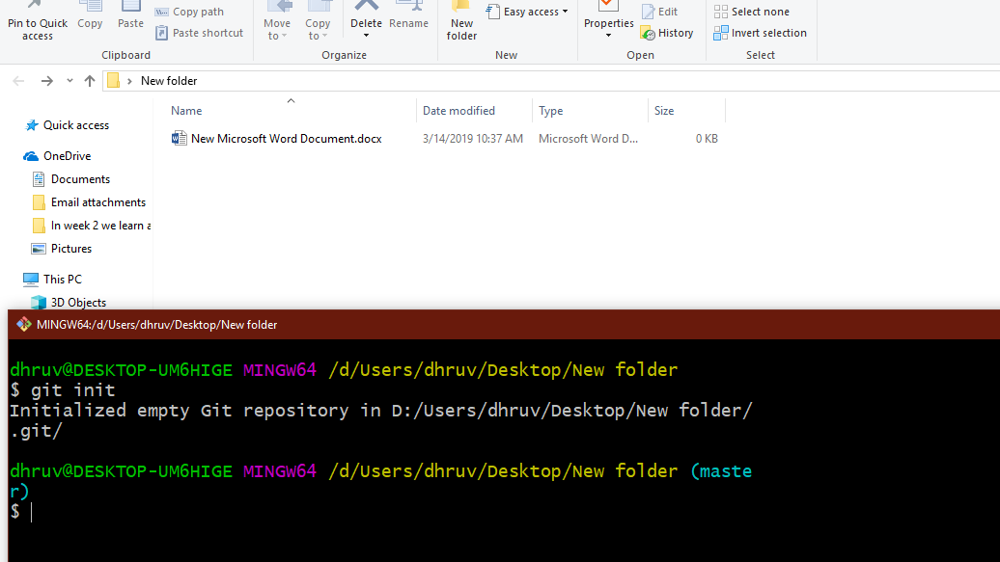Git status
After adding file status will tell that new file is added to working directory byt not added to INDEX. If message is highlighted in red color then it means changes are not ready for commit yet.

Git add
To make changes ready for commit we need to add these changes to Index. Git add will make These changes to "Ready for commit" and we can say now that changes are "Staged".
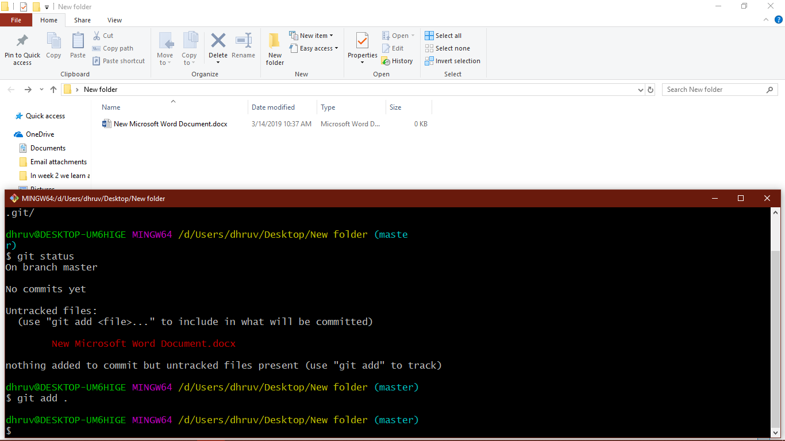Recheck: git status
directories are now are in green. it means changes are "Staged" and ready to commit.

Git commit
Now all the imformation previous changes will be added to local repository.

Git push
Before git push local repository will be One commit or serval commits ahead of Remote repository. This command will update the remote repository.
git push will upload your changes in local repository to remote repository. In my case it will be uploaded in the git-lab repository. since this local repository is for demostration purpose it has no remote repo. here is the link of my Fablab remote repository. Click !
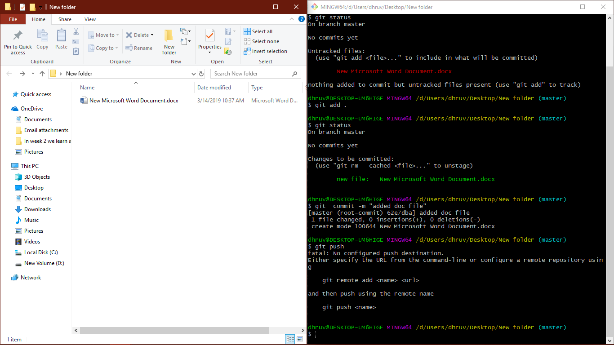
Basics of Web development
In web-development we are introduced to markdown language, its mark-up our web page fonts like HTML do but it is way easier to learn and operate. It helps beginners to learn web development. There are some other things we learn in web-development.
markdown
I begin to learn markdown language this week, as I told before it is very easy to learn and perfect for the beginner in web development.You can learn basics of markdown in few minutes in
link. It is real time setup to learn markdown efficiently.
Below are the Topics i am going to explain.
- Font decoration (bold, italic)
- How to generate Heads
- Giving hyper links
- How to upload images!
- About blockquote
Font Decoration
Here in image we can see, " ** "(double stars) are used to bold the fonts and " * "(single star) is used to italic the font.

Heads
you can apply heads on mark-up language by just simply putting " # " in front of line. each number of " ># " represents applied head.
" ###### = h6 " Hyper links
Hyper links can be assign to perticular word or line by brakets.
[Text which are given link](direct link (http))

images
for putting images in website.
type " ) " blockquote
Blockquote is for giving text special appearance !
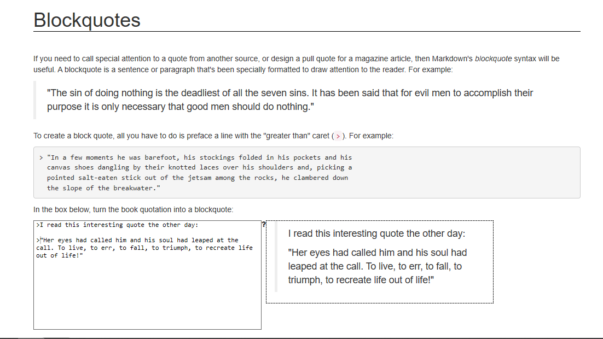lists
For making list, you just have to put * befor the items, as shown in image.
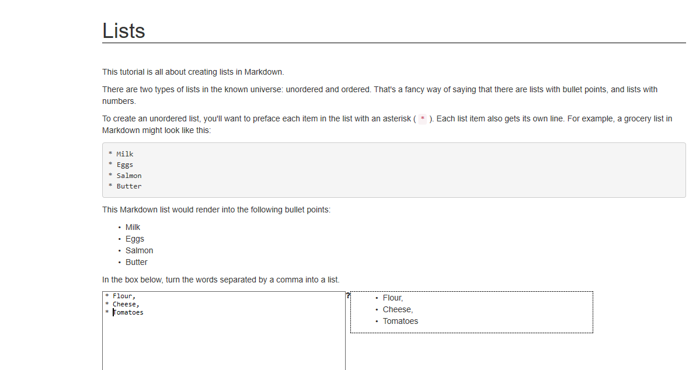HTML/CSS coding
HTML is the standard markup language for creating Web pages. it stands for HyperText Markup Language and describes the structure of Web pages using markup.
CSS stands for Cascading Style Sheets. CSS describes how HTML elements are to be displayed on the screen, paper, or in other media. CSS saves a lot of work. It can control the layout of multiple web pages all at once.
Though markdown is a very good language for beginners, I had a problem with MK-doc’s theme, when I was creating my page in visual code, I was giving styling based on what I was watching on preview, but whenever I was uploading
it Mkdoc’s default theme applies and my presentation was not good enough to present!
So, I went back to HTML, with which I was familiar.
I have created my source code for a website in visual studio code, it is very efficient to use because of its real-time preview, it saved a lot of time in web-development.
Use of tags
paragraph tag
it is paragraph simple paragraph tag, you have to put your paragraph in it. It will appear like a paragraph in webpage
<p>(content)<p>List tag
n=1,2, 3...6 for different heads
<hn>(contet)<hn>Images
For putting images
<img src="(local link)">(content)>Listing items
<li>(content)</li>Stucture of html
Default structure
<html>
<head>
About website imformation
<head>
<body6>
things which will be displayed in web
<body>
</html>
Doctype
<!doctype html>doctype tells the browser about the website. it tells it is an HTML website. Html is where all data will remain and execute. head contains information about a website like whose website is this and what it contains. its help for SEO.
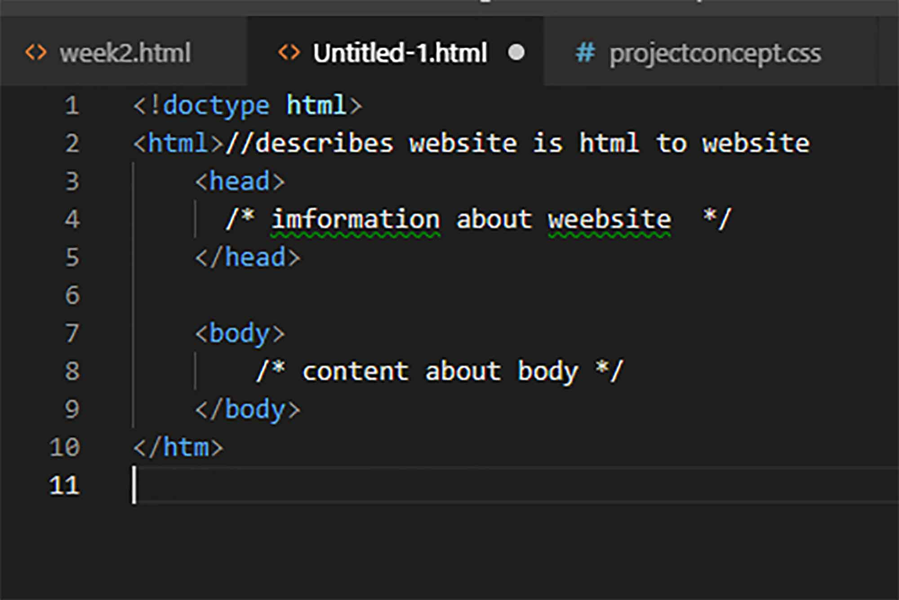Heads
<h1>(content)>h1>here i put one example of how you can head the text , there are heads ( 1 to 6 ) you can choose according to your need.
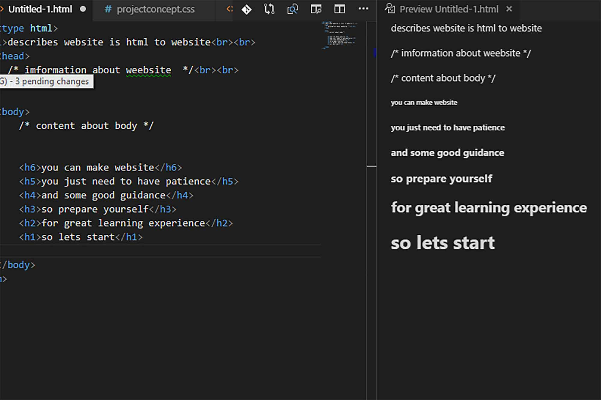paragraph
<p>(content)<p>
listing
<li>(content)</li>
Css
CSS will need an interactive environment through which can be found on W3S school css tutorial. its complete documentation of how you can insert the CSS on
your HTML documents and give styles to different divisions.
It is very easy to learn HTML and CSS. There are many tags you can use to make a website. These are the basic tags used in HTML. I am putting a link here for the basics of HTML.
- W3S school - is very good real time editor to learn html
- HTML and CSS tutorial - I learned html CSS from it, I highly recommend if someone start web-development with html/CSS
conclusion
This week bought new things to learn. I knew basics of the git but i didn't know how can I use it to its full capabilities. I learn how to use git more conveniently, I learn about markdown language, get to know about MK-docs and had little bit more explorations in HTML and CSS.